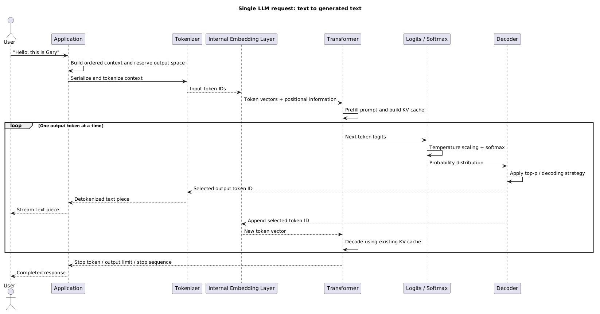
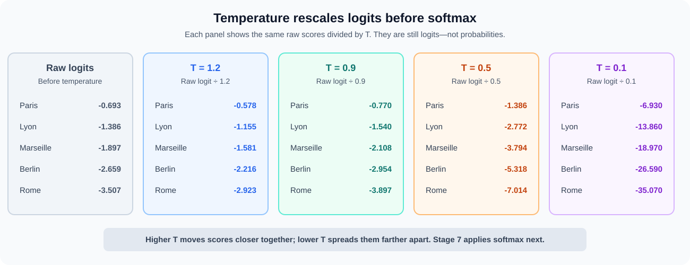
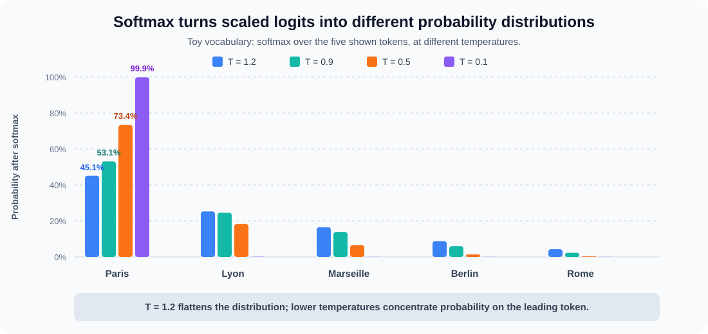
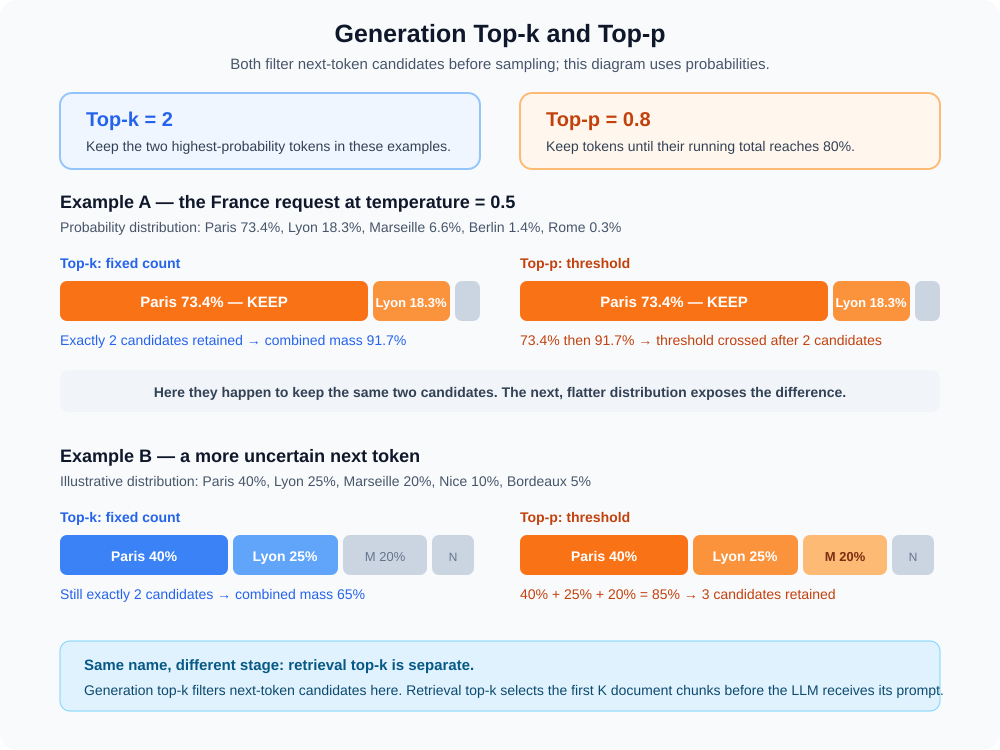
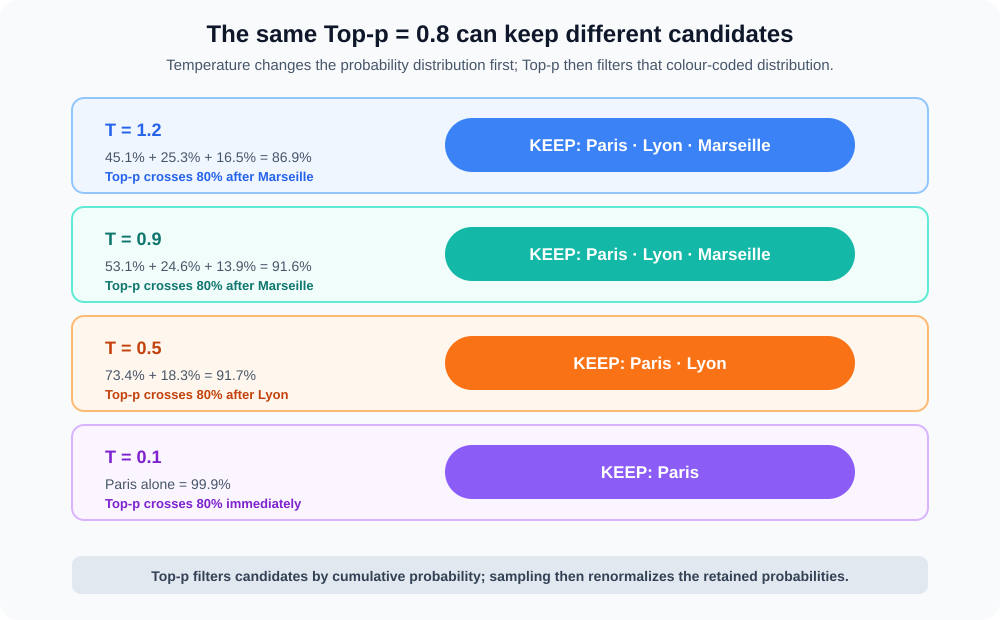
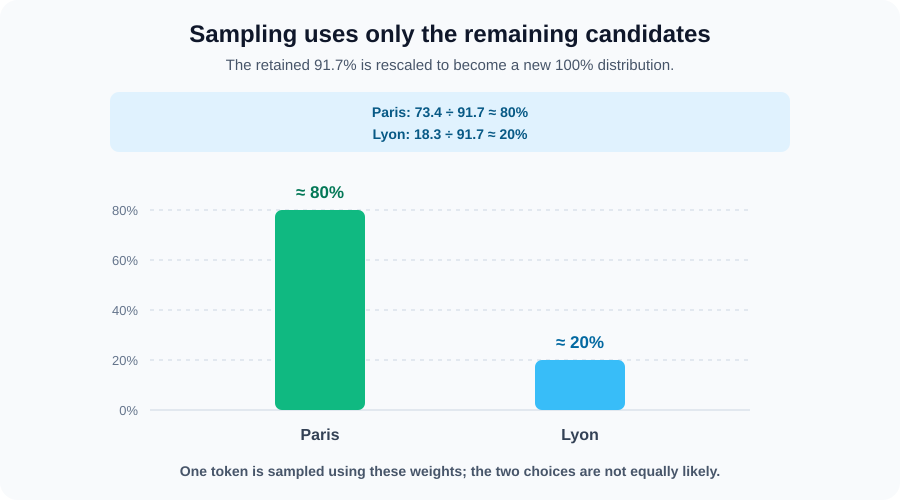
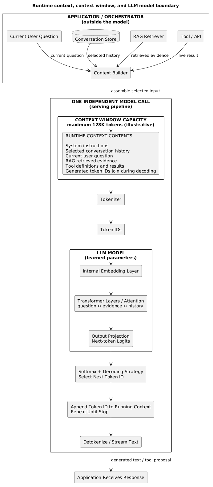
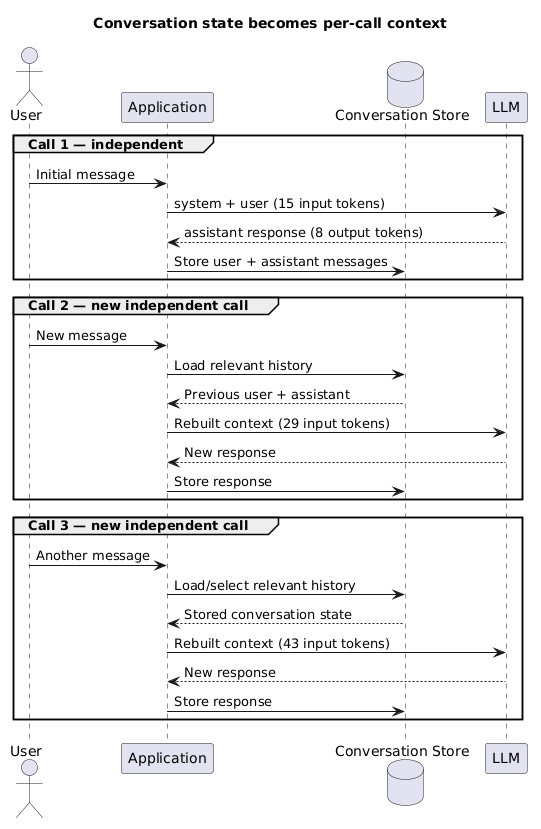
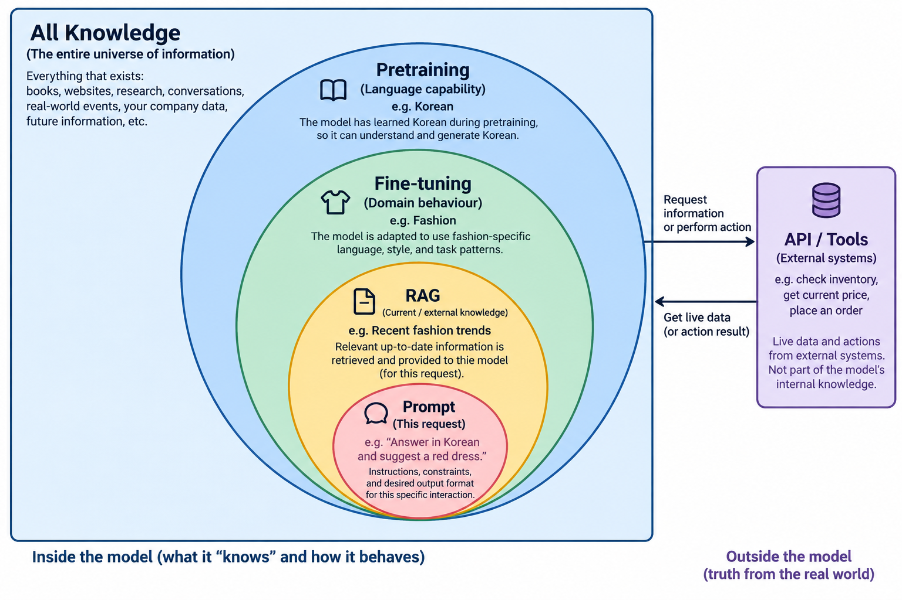

AI Fundamentals
This page follows one LLM request from text on the screen to generated, streamed text. Its running example is:
Part 1 of 7: Fundamentals → Prompt engineering → Models and providers → Knowledge bases → Agents → Infrastructure → AWS AI Services.
"The capital of France is"
An LLM generates a response one token at a time. First use the map below to see the entire journey; the rest of the page then walks through each box in order.
1. Big picture: complete request flow
The prompt is processed once, then the generated token loops through the model until a stop condition is reached:
"The capital of France is"
↓ tokenizer
tokens → token IDs
↓ internal embedding lookup
vectors
↓ transformer / attention
contextual representation
↓ output projection
logits
↓ temperature → softmax
probabilities
↓ top-p / sampling
next token ID → " Paris"
↓ append to context and repeat
detokenize / stream text
- The values, IDs, and token boundaries on this page are illustrative; every model has its own compatible tokenizer and vocabulary.
- The surrounding application submits text and receives text. Its broader concerns—such as conversation history, permissions, tools, and validation—are supporting concepts later in the page, not steps performed inside this single inference loop.

Before Stage 1 — construct the prompt
Before this text reaches the tokenizer, the application combines the user’s request with the task instructions, relevant context, optional examples, and desired output format. Learn how to design that input in AI Prompt Engineering.
2. Stage 1 — text becomes tokens and token IDs
- A tokenizer splits text using a vocabulary designed for that model.
- A token may be:
- a whole word;
- part of a word;
- punctuation;
- a whitespace pattern;
- one or more bytes.
- Leading spaces can be part of a token, which is why examples often show tokens such as
" Gary".
Illustrative tokenization:
"The capital of France is"
↓ tokenizer
["The", " capital", " of", " France", " is"]
↓ vocabulary lookup
[464, 3139, 286, 4881, 318]
- The numbers are illustrative; every tokenizer/model can assign different boundaries and IDs.
- A token ID is an integer index into the model vocabulary.
464does not itself contain the meaning of “The”; it identifies the relevant vocabulary entry.- Tokenization affects:
- context usage and input cost;
- truncation;
- latency;
- handling of code, URLs, identifiers, tables, and different languages.
3. Stage 2 — token IDs become internal vectors
- The transformer does not meaningfully reason over raw integers such as
464. - The model contains a learned token-embedding table.
- The token ID selects one row from that table:
token ID 464
↓ embedding lookup
[0.83, 0.17, -0.31, ...]
- For our running request, each of
[464, 3139, 286, 4881, 318]selects a learned vector. - Each input token becomes a vector with the model’s internal hidden dimension.
- These vectors were learned with the rest of the model during training.
- The vectors begin as token representations; transformer layers then make them contextual.
Important boundary:
- Standard LLM inference normally uses the generation model’s internal embedding layer.
- It does not normally call a separate external embedding model before generation.
- A dedicated embedding model used for semantic search or a vector database is a different model and interface; see AI Knowledge Bases.
3.1 The model pipeline is coupled
- The tokenizer, vocabulary, internal embedding weights, transformer weights, output vocabulary, and detokenizer form one model-compatible pipeline.
- This coupling is model-specific or checkpoint/model-family-specific, not simply provider-specific.
MODEL / CHECKPOINT
│
┌────────────────┼────────────────┐
↓ ↓ ↓
tokenizer/vocabulary embedding table transformer weights
│ │ │
token IDs learned vectors contextual processing
└────────────────┼────────────────┘
↓
vocabulary logits
↓
matching detokenizer
- Token ID
464only means something relative to its tokenizer vocabulary. - Arbitrary token IDs from Model A cannot normally be supplied to Model B.
- The internal embedding table and transformer are trained together; GPT’s internal vectors cannot normally be substituted into Llama’s transformer, for example.
- Output logits correspond to the same model vocabulary, so generated IDs need the matching detokenizer.
- The concepts of softmax, greedy decoding, temperature, and top-p are general; providers decide which controls and implementations their serving APIs expose.
- Through an API, this coupled machinery is normally packaged behind a text/messages-in → text/tokens-out interface.
4. Stage 3 — prefill processes the prompt
- The model first processes the supplied input tokens in the prefill phase.
- Prompt tokens can generally be processed together across each transformer layer, subject to causal attention.
"The capital of France is"
↓
[464, 3139, 286, 4881, 318]
↓ embedding lookup
[vector, vector, vector, vector, vector]
↓
transformer prefill
- A causal mask prevents a token position from reading future positions.
- The last input position can use the earlier prompt when predicting what comes next.
- During prefill, the model normally builds a key-value (KV) cache containing reusable attention information for each processed token.
- Time to first token (TTFT) includes:
- request/network overhead;
- tokenization and scheduling;
- prefill computation;
- generation of the first output token.
- Larger prompts require more prefill work and memory, so they commonly increase TTFT before output appears.
5. Stage 4 — the transformer makes tokens contextual
- Positional information tells the model where tokens occur in the sequence.
- Exact implementations vary; many modern models apply relative or rotary positional information in attention.
- Self-attention lets each token position weigh relevant earlier positions.
- When predicting after
"The capital of France is", the final representation can use"France","capital", and the surrounding words.
- When predicting after
- Multiple attention heads can focus on different relationships, such as:
- local syntax;
- names and references;
- long-range dependencies;
- task or formatting patterns.
- Feed-forward layers transform each position after attention.
- Residual connections preserve and combine earlier representations.
- Normalization keeps activations stable through a deep network.
- This attention-plus-transformation block is repeated through many transformer layers.
Engineering mental model:
initial token vectors
↓
attention: gather relevant context
↓
feed-forward: transform each position
↓
residual + normalization
↓
repeat through many layers
↓
contextual representation used for next-token prediction
- Attention learns useful contextual patterns; it does not guarantee logical reasoning or factual verification.
6. Stage 5 — output projection produces logits
- The transformer projects the final position’s representation into one score for every token in its output vocabulary.
- These raw scores are logits.
- Logits are not yet probabilities and do not need to sum to anything.
For the final position in "The capital of France is", the output projection produces one logit for every vocabulary token. The values are illustrative, not output from a particular model.
- We are now at the logits box on the map. The next four stages convert these scores into one selected token ID.
7. Stage 6 — temperature
Temperature is applied at every generated-token step. It changes the shape of the logits before they become probabilities:
- Lower temperature concentrates probability on likely tokens; it does not make them factual.
- Temperature does not remove tokens or choose the next token by itself.
- Tip: higher temperature makes outputs more varied and less predictable; lower temperature makes them more conservative and repeatable.
T = 1is the baseline: it leaves the logits unchanged. Values below1sharpen the distribution; values above1, if an API allows them, flatten it. If your API only offers0–1, then1is simply its least-conservative setting. This walkthrough compares1.2,0.9,0.5, and0.1.
Continue the France request with these illustrative relative logits. Conceptually, temperature divides each logit by T: a lower T increases the separation between scores.
| Token | Raw logit | ÷ 1.2 |
÷ 0.9 |
÷ 0.5 |
÷ 0.1 |
|---|---|---|---|---|---|
" Paris" |
-0.693 | -0.578 | -0.770 | -1.386 | -6.930 |
" Lyon" |
-1.386 | -1.155 | -1.540 | -2.772 | -13.860 |
" Marseille" |
-1.897 | -1.581 | -2.108 | -3.794 | -18.970 |
" Berlin" |
-2.659 | -2.216 | -2.954 | -5.318 | -26.590 |
" Rome" |
-3.507 | -2.923 | -3.897 | -7.014 | -35.070 |
These are still logits, not probabilities. The diagram shows only the Stage 6 rescaling; Stage 7 applies softmax next.

8. Stage 7 — softmax produces probabilities
Softmax converts the temperature-adjusted logits from Stage 6 into a probability distribution: every probability is non-negative and the full vocabulary sums to 100%. For the France example, it produces:
| Token | temperature = 1.2 |
temperature = 0.9 |
temperature = 0.5 |
temperature = 0.1 |
|---|---|---|---|---|
" Paris" |
45.1% | 53.2% | 73.4% | 99.9% |
" Lyon" |
25.3% | 24.6% | 18.3% | 0.1% |
" Marseille" |
16.5% | 13.9% | 6.6% | <0.1% |
" Berlin" |
8.8% | 6.0% | 1.4% | <0.1% |
" Rome" |
4.3% | 2.3% | 0.3% | <0.1% |
Only now do we have probabilities that top-p can use. To keep one concrete path through the later stages, use the orange temperature = 0.5 column below; the next diagram also shows how the top-p candidates change at 1.2, 0.9, and 0.1.

9. Stage 8 — top-p filters the sampling candidates
Apply top-p = 0.8 to the Stage 7 probabilities. Starting from the most likely token, keep tokens until their cumulative probability reaches at least 80%:
Tip: higher top-p keeps a larger probability mass and more candidate tokens; lower top-p keeps fewer, more likely candidates.
How top-k and top-p differ — and can combine
Top-k keeps exactly the k most likely next-token candidates. Top-p keeps a variable number of candidates until their combined probability reaches p. They are not inherently an either/or choice: when a model API supports both, both can constrain the candidate pool before sampling. The exact filtering order is implementation-specific.
| Setting | With the temperature = 0.5 probabilities below |
What is fixed? |
|---|---|---|
top-k = 2 |
keeps " Paris" and " Lyon" |
The number of candidates: 2. |
top-k = 3 |
keeps " Paris", " Lyon", and " Marseille" |
The number of candidates: 3. |
top-p = 0.8 |
keeps " Paris" and " Lyon" because their cumulative probability reaches 91.7% |
The probability mass: at least 80%. |
top-k = 2 and top-p = 0.8 |
both filters apply; the final pool cannot be wider than Top-k’s two candidates in this example | Both constraints. |
Think of both together as a double boundary: Top-k prevents a pool from growing beyond a fixed count; Top-p prevents sampling from candidates outside its probability-mass cutoff. Top-k and top-p are decoding controls, not context length or retrieval top-k. Whether an API exposes either control, or allows both together, is model-specific.

Cumulative probability means a running total after sorting tokens from most likely to least likely:
The Cumulative column is not another probability assigned to a token. It is that token’s probability plus every probability above it. Because the tokens are ordered from most likely to least likely, the running total eventually reaches 100%.
| Token | Probability from Stage 7 | Cumulative (running total) |
|---|---|---|
" Paris" |
73.4% | 73.4% |
" Lyon" |
18.3% | 91.7% |
" Marseille" |
6.6% | 98.3% |
" Berlin" |
1.4% | 99.7% |
" Rome" |
0.3% | 100.0% |
" Paris" = 73.4%
" Paris" + " Lyon" = 73.4% + 18.3% = 91.7%
+ " Marseille" = 91.7% + 6.6% = 98.3%
Top-p compares its threshold with this running total. It does not require an individual token to have an 80% probability.
" Paris" 73.4% → below 80%, keep going
" Lyon" +18.3% → cumulative 91.7%, keep it and stop
" Marseille", " Berlin", " Rome" → excluded from this sampling step

10. Stage 9 — sample the next token
Continue the orange temperature = 0.5 path: only " Paris" and " Lyon" are eligible. Their probabilities are normalized within that candidate set—roughly 80% versus 20%—and one is sampled. They are not equally likely. In this walkthrough, sampling selects " Paris".

next-token logits
↓
temperature scales the logits
↓
softmax produces probabilities
↓
top-p keeps the cumulative candidate set
↓
sample one token → append it → repeat
- With the original
temperature = 1distribution, the sametop-p = 0.8would keep" Paris"," Lyon", and" Marseille". Lowering the temperature caused the 80% threshold to be reached with fewer tokens. - Temperature does not choose the candidate set directly; top-p does. Top-p does not reshape probabilities; temperature does.
- Exact controls and processing order can vary by model/API; some providers recommend changing temperature or top-p rather than both.
- This generation top-p is separate from retrieval top-k: retrieval chooses documents/chunks before the LLM runs; top-p chooses output-token candidates during decoding.
11. Stage 10 — append the token and repeat autoregressively
The input/output distinction is fundamental:
- Input/prefill: many prompt tokens can be processed together.
- Output/decode: token
N + 1depends on tokenN, so generation is sequential.
"The capital of France is"
↓
predict token ID for " Paris"
↓ append to context
"The capital of France is Paris"
↓
predict token ID for "."
↓ append to context
predict end-of-sequence
- Every generated token becomes part of the context used to predict the next token.
- The KV cache lets decoding reuse attention information from previous tokens instead of recomputing the entire prefix each time.
- The new token must still pass through the transformer before the following token can be chosen.
- Time per output token (TPOT) measures the average decode time between generated tokens.
- TPOT is influenced by model size, serving hardware, batch/load, KV-cache size, and provider implementation.
- Because tokens are produced one at a time, the server can stream each completed text piece to the client instead of waiting for the full response.
12. Stage 11 — token IDs become text again and stream
- The decoder produces token IDs.
- The tokenizer maps each selected ID back to its token text/bytes and joins the pieces.
7123 → " Paris"
13 → "."
↓ detokenize
"The capital of France is Paris."
- IDs are illustrative and model-specific.
- The output does not pass through an embedding model again.
- With streaming enabled, the application may receive and display decoded text pieces incrementally.
- A client may buffer incomplete byte/Unicode sequences so only valid text is displayed.
13. Supporting concepts beyond the single-request loop
The core journey ends when decoded text is streamed. The following material explains the surrounding constraints and related concepts without changing the inference path above.
13.1 Conversation, context, and context window
- Conversation: the logical history stored by the application or agent.
- Context: the tokens actually constructed and supplied to this particular model call.
- Context window: the model-defined maximum token budget available to one call, usually covering input context plus generated output.
- Each API call is independent:
- the model does not automatically retain the previous call;
- the application stores messages or another memory representation;
- the application selects and resends the relevant history for the next call.
The application may build context from:
system/developer instructions
+ previous user messages
+ previous assistant messages
+ retrieved documents
+ tool definitions and tool results
+ current user message
+ space reserved for generated output
- Runtime context is the actual content assembled for one independent LLM call; generated token IDs join the running context during decoding.
- Runtime context = contents. Context window = maximum capacity.
- A 128K context window in the diagram is illustrative; limits differ by model and may include separate output constraints.
- RAG and tools run outside the model, then add retrieved evidence or tool results to that context.
- The transformer has no special “RAG mode”: after tokenization, attention processes evidence, history, instructions, and the question as tokens in the same context.
- Model parameter count and context-window size are separate:
- parameters are learned weights inside the model;
- the context window is the per-request token budget.

- Python analogy:
MAX_CONTEXT_TOKENS = 128_000 # illustrative model limit
model_parameters = load_learned_weights()
def llm_call(input_tokens, max_output_tokens):
assert len(input_tokens) + max_output_tokens <= MAX_CONTEXT_TOKENS
running_context = list(input_tokens)
for _ in range(max_output_tokens):
logits = model_forward(model_parameters, running_context)
next_token_id = decode(logits)
running_context.append(next_token_id)
yield detokenize(next_token_id)
if is_stop_token(next_token_id):
break
- model_parameters stay fixed during inference; running_context is different for every call and grows during generation.
-
The pseudocode shows the mental model; production serving normally reuses a KV cache rather than recomputing the entire prefix.
- The selected context is serialized according to the model’s chat format, tokenized, and supplied to a new inference call.
- Message roles are structured context conventions:
- system/developer: application behaviour and constraints;
- user: caller request and data;
- assistant: earlier or generated model output;
- tool: observation returned by external execution.
13.2 A 1,000-token calculation
The diagram used 128K to show the boundary. Shrink it to 1,000 tokens to make the same capacity calculation easier to follow:
input context tokens + generated output tokens ≤ context window
Each call is independent, but resending selected conversation history usually makes later input contexts larger:
CALL 1 — independent request
Input context: [system + user] = 15 tokens
Output: 8 tokens
Total used: 15 + 8 = 23 / 1,000
Unused capacity: 1,000 - 23 = 977 tokens
Application stores the 8-token assistant response.
CALL 2 — new independent request
Input context:
[system + previous user + previous assistant + new user] = 29 tokens
Theoretical output headroom: 1,000 - 29 = 971 tokens
Application stores the new response.
CALL 3 — new independent request
Input context:
[previous context + previous response + new message] = 43 tokens
Theoretical output headroom: 1,000 - 43 = 957 tokens
- The previous output consumed Call 1’s budget while it was generated.
- If the application resends that output in Call 2, it is counted again as part of Call 2’s input context.
- Theoretical headroom is not necessarily the allowed output size:
available output budget = minimum of:
configured max output tokens
model/provider output limit
context window - input context tokens

- A useful prompt makes the task, required evidence, refusal conditions, and output shape explicit.
- Prompting can improve model behaviour; it cannot enforce identity, authorization, factual truth, or transaction integrity.
- Treat user text, retrieved documents, and tool results as untrusted data because they may contain conflicting or malicious instructions.
- Practical consequences:
- longer context increases input tokens, cost, prefill work, TTFT, and KV-cache memory;
- output capacity must be reserved;
- excess history must be trimmed, summarized/compacted, or retrieved selectively;
- important evidence can be buried in irrelevant or repeated content;
- a larger advertised window does not guarantee reliable attention to every detail.
- A provider may offer managed conversation state, but that remains an application/platform feature around independent inference calls.
14. Training, fine-tuning, and inference
- Pretraining changes the model’s parameters on broad data. It gives capability: in this example, the ability to understand and speak Korean.
- Fine-tuning changes parameters again with representative examples. It gives consistent behaviour/specialization: fashion terminology, style classification patterns, and a Korean-fashion tone.
- RAG retrieves knowledge into this request without changing weights: recent Korean fashion trends, current collections, policies, or documents.
- Prompt engineering supplies the instruction for this request: “Answer in Korean,” “summarize this trend,” “return JSON,” or “recommend a red outfit.”
- API / tools connect to live state or actions outside the model: current inventory, current price, customer/account state, or placing an order.
- Inference runs the trained model for the assembled request (prefill, then autoregressive decoding). One production application can use every layer below at the same time.
The nesting below shows conceptual scope, not literal data containment: each inner layer narrows what is used for the current task.

| Layer | Main Question | Example |
|---|---|---|
| Pretraining | What can the model fundamentally do? | Understand Korean |
| Fine-tuning | How should it consistently behave? | Behave like a Korean fashion specialist |
| RAG | What external knowledge does it need? | Retrieve recent Korean fashion trends |
| API / Tools | What is true right now / what action is required? | Check current inventory |
| Prompt | What should it do for this request? | Answer in Korean and recommend red clothing |
Prompting can often reproduce behaviour that could otherwise be fine-tuned. Start with prompting. Fine-tuning becomes useful when the behaviour is stable, repeated, and prompting alone is too inconsistent, expensive, or cumbersome.
14.1 Exam distinction: RAG/knowledge bases versus fine-tuning
Do not merge these ideas: RAG adds current evidence to the request; fine-tuning changes the model’s learned behaviour. For Amazon Bedrock specifically, a Knowledge Base is managed RAG, not a fine-tuning dataset.
14.2 Apply it: a Korean fashion assistant
For “한국어로 최근 트렌드를 요약하고 빨간 옷을 추천해 주세요,” the application can retrieve trend documents with RAG, look up a live price and stock through an API, then instruct the model to answer in Korean. These techniques complement one another; they are not alternatives.
- Fine-tuning is a poor database for prices, inventory, policies, or other facts that change frequently.
- Model output is a proposal. Authentication, authorization, validation, and order transactions remain deterministic application controls.
14.3 Compact ML concepts for exam questions
| Concept | Recognition rule |
|---|---|
| Overfitting | Very high training performance but weak performance on unseen validation/test data; excessive complexity for the amount of training data increases the risk. |
| Underfitting | Poor performance on both training and unseen data; often too simple or insufficiently trained. |
| GAN | A generator creates synthetic samples; a discriminator learns to distinguish real from generated samples. Their adversarial feedback improves the generator. |
| Reinforcement learning | An agent learns by acting in an environment to maximize cumulative reward. The reward function must reward desired outcomes and penalize unsafe or unproductive behaviour; refine it from observed failures. |
For deeper treatment, see AI Knowledge Bases, AI Agents, and AI Infrastructure and Evaluation.
15. Hallucination, grounding, and structured output
- The model selects plausible next tokens from learned patterns and supplied context; it does not automatically verify claims.
- A hallucination is a claim, citation, entity, calculation, or tool argument unsupported by available evidence.
Fictional example:
Question: "Who is the CEO of Glucolte?"
Trusted evidence in this request: none
After "The CEO of Glucolte is ..."
illustrative next-token probabilities:
"Gary" 38%
"John" 21%
"Michael" 12%
...
Generated answer: "The CEO of Glucolte is Gary Lu."
- The probabilities are illustrative; names may also span several tokens.
- The answer is grammatical and may sound confident, but the request contained no evidence supporting it. Even if it were accidentally correct, the answer would still be ungrounded.
- The model does not reliably execute an internal rule such as
fact unknown → stop. Its basic operation remains:
learned weights + supplied context
↓
next-token probability distribution
↓
plausible continuation
- Unsupported output can arise because:
- the fact was absent, incorrect, or stale in training data;
- the request context is missing or conflicting;
- retrieval returned irrelevant or outdated evidence;
- the model ignored or incorrectly combined valid evidence.
- RAG improves the evidence available to next-token prediction; it does not change the underlying generation process:
without RAG: weights + question → plausible guess
with RAG: weights + question + authoritative evidence → better-grounded answer
- RAG therefore reduces hallucination risk but cannot eliminate it: retrieval can fail, and the model can still misuse correct evidence.
- Low temperature does not solve this:
- it makes high-probability continuations more likely;
- a likely continuation can still be wrong;
- the model may repeat the same wrong answer more consistently.
- Reduce risk by:
- supplying authoritative evidence through retrieval or tools;
- requiring an insufficient-evidence response;
- carrying source IDs into citations;
- validating calculations, identifiers, and business rules in code;
- using human approval for high-impact outcomes.
- Structured output constrains syntax or shape, not truth:
- valid JSON can contain a nonexistent customer;
- schema-valid tool arguments can still be unauthorized or unsafe.
16. What remains outside the model
- The model can propose text, structured data, or a tool call.
- The surrounding application must own:
- authentication and authorization;
- retrieval of permitted evidence;
- tool execution and least-privilege credentials;
- schema and domain validation;
- retries, idempotency, state, and approvals;
- logging, evaluation, and user-visible error handling.
- Prompt instructions cannot enforce permissions or transaction integrity.
- Never treat generated tool arguments as authorization.
user request → model proposes tool + arguments
→ application validates identity, policy, schema, and risk
→ tool executes with least privilege
→ model receives bounded observation
→ model produces the next token or final answer
- Retrieval internals: AI Knowledge Bases
- Tool loops and agents: AI Agents
- Production controls: AI Infrastructure and Evaluation